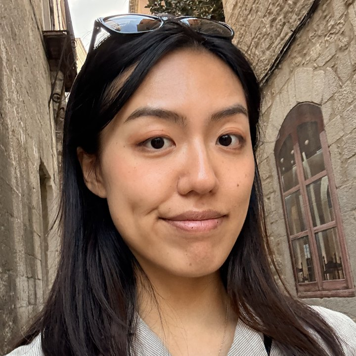

Ingeniaria plenae-acervus, var. platforma interna
Full-stack engineer with 5 years shipping production web apps, APIs and enterprise integrations at Snap and Expedia. Commonly found owning internal platforms end to end — discovery, architecture, launch, and production support.

Fig. 1 — subject observed mid-call, Palo Alto.
Identity Oct 2022 – Dec 2023
Virtual Agent Control Mar – Sep 2022
Virtual Market Coach Jun 2021 – Mar 2022
JavaScript · SQL · Go · Java · Bash · C/C++ · Starlark
React Router · Vite · HTML/CSS · Playwright · WCAG 2.2 (axe)
Fastify · Flask · Django · gRPC · REST/OpenAPI · OAuth 2.0/JWT · Pydantic
RAG Engine · Agent Engine · Google ADK · LangChain · Ragas · MCP · Glean APIs · reranking & RRF
BigQuery · Firestore · Redis · DynamoDB
Cloud Run · Pub/Sub · Lambda · Terraform · Ansible · Docker · Kubernetes · GitHub Actions · Datadog
Peer-matching and auto-scheduled meetups during COVID.
Django tracker for cryopreserved samples.
Uber-style demo app for on-call drone footage.
Recommender for relevant legislation.
BA Computer Science
BA Molecular and Cell Biology
Google Cloud Skill Badge: Gemini Enterprise Application 2026
AWS Certified Cloud Practitioner 2023
Speaks: English · Korean · French · Hindi · Spanish